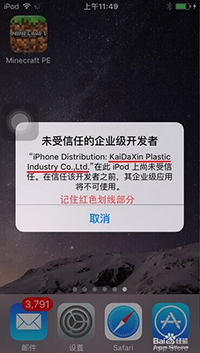
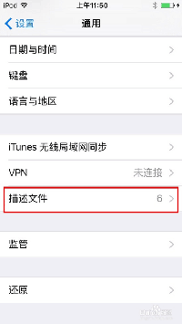
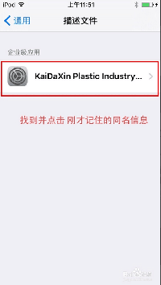
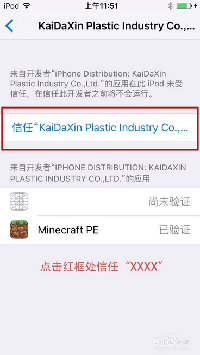
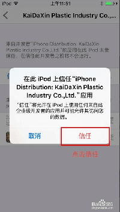

苹果IOS9.0以上系统玩家必读：
苹果手机升级至ios 9.0或更高版本后， 提示“未受信任的企业级开发者”处理方法：
1、安装‘澳众国际’游戏app
2、进入手机设置--通用--下拉找到“描述文件”点击进入
3、看见“企业应用”选择最下方那个文件点击进去
4、看见“信任”的字样 点击会跳出一个对话框--点击信任，即可
下载地址：http://fir.im/wtcd
- 苹果手机升级至IOS9.0或更高级后，提示"未受信任的企业级开发者"处理方法： 1、安装《澳众棋牌》游戏APP；  2、进入手机依次点击设置→→通用→→描述文件；  3、在描述文件内找到"企业应用"→→选择最下方那个文件点击进入；  4、找到"信任"字样点击后跳出一个对话框→→点击信任即可。  5、点击信任 即可:  恭喜你，到此就大功告成了！ 回去试试你刚才打不开的APP，现在是不是可以正常进入了，如果不行，那么可能是你刚才选择的描述文件不对，看清楚打开应用时提示你的那个名称，重新来一次即可。